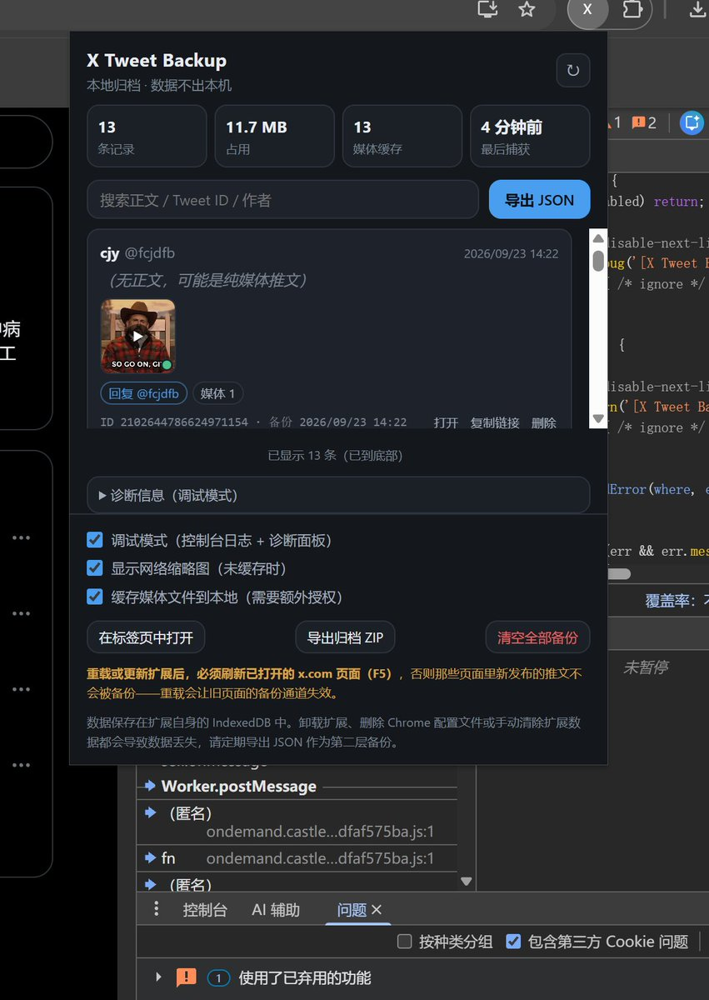

RT @fcjdfb: 想要啥自己填了，数据现在是全都能保存。发帖时候会自动劫持在本地保存。那就编辑一下保存格式然后搓一下ui就行了，但是定时发布应该是无法解决这个方式下的保存。因为走的x服务器，逻辑上来说不太能。手机应该是无法无风险情况下实现了，不能走浏览器操作空间大。如果搞…


想要啥自己填了，数据现在是全都能保存。发帖时候会自动劫持在本地保存。那就编辑一下保存格式然后搓一下ui就行了，但是定时发布应该是无法解决这个方式下的保存。因为走的x服务器，逻辑上来说不太能。手机应该是无法无风险情况下实现了，不能走浏览器操作空间大。如果搞第三方客户端风险太大了，就不 https://t.co/SF47ETG5VK